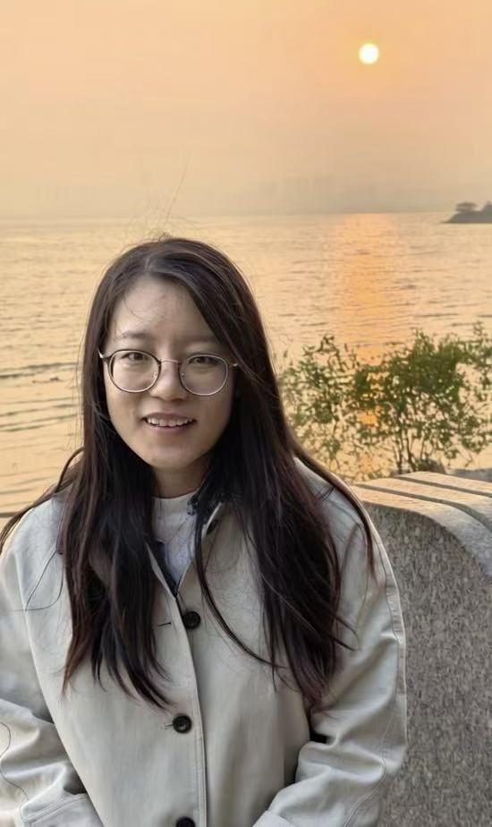

Welcome to Tongyao Pang's Page!

Tongyao Pang (庞彤瑶)
Assistant Professor
Yau Mathematical Sciences Center
My research focuses on Generative Models: Theory, Algorithms and Applications, with particular interests in sampling theory for generative models, model distillation, posterior training, and posterior sampling.
My Google Scholar profile, DBLP, GitHub, and ORCID.
Contact
地址：北京市海淀区清华大学双清综合楼 B533，100084
Address: B533, Shuangqing Complex, Tsinghua University
Haidian District, Beijing, China, 100084
Biography
2024–present: Assistant Professor, Yau Mathematical Sciences Center, Tsinghua University
2020–2023: Postdoctoral Fellow, Department of Mathematics, National University of Singapore
2014–2019: Ph.D. in Mathematics, National University of Singapore
2010–2014: Bachelor's degree in Mathematics, Peking University
Teaching
Spring 2026: Deep Learning Methods and Applications（深度学习方法和应用）
Fall 2025: Deep Learning（深度学习）
Spring 2025: Deep Learning Methods and Applications（深度学习方法和应用）
Fall 2024: Introduction to Computer Vision（计算机视觉导论）
Spring 2024: Deep Learning Methods and Applications（深度学习方法和应用）
Publications & Preprints
Preprints
DiffusionRVGE: Reinforcement Learning via Regression-Based Value Gradient Estimation
Jiayuan Wang and Tongyao Pang. arXiv:2610.22973, 2026. [pdf] [arXiv] [code]A Posterior-Dynamics Framework for Imaging Inverse Problems with Pretrained Diffusion Priors
Zhaoqiang Liu, Tongyao Pang, Ruibing Wang, and Yang Zheng. arXiv:2608.15144, 2026. [pdf] [arXiv]ODPO: Variational Optimal-Drift Policy Optimization for Reward-Tilted Flow and Diffusion Models
Jiayuan Wang, Lim Zhai Xiang, Weifeng Mu, and Tongyao Pang.Forward-Evolution Error Analysis and Adaptive Design for Matrix-Valued Diffusion Models
Tongyao Pang, Zuowei Shen, and Ruitong Zhang. arXiv:2608.15103, 2026. [pdf]Enhancing Low-resolution Image Representation Through Normalizing Flows
Chenglong Bao, Tongyao Pang, Zuowei Shen, Dihan Zheng, and Yihang Zou. arXiv:2601.06834, 2026. [pdf]
Publications
Self-supervised deep learning for inverse imaging problems
H. Ji, T. Pang, and T. Zhang. Machine Learning solutions for Inverse Problems, Part B, Volume 27, Elsevier, October 2026. [pdf]Outlier-Robust Diffusion Solvers for Inverse Problems
Yang Zheng, Jiahua Liu, Tongyao Pang, Wen Li, and Zhaoqiang Liu. IEEE/CVF Conference on Computer Vision and Pattern Recognition (CVPR), 2026. [pdf]Siamese Cooperative Learning for Unsupervised Image Reconstruction from Incomplete Measurements
Yuhui Quan, Xinran Qin, Tongyao Pang, and Hui Ji. IEEE Transactions on Pattern Analysis and Machine Intelligence, 46(7), 4866–4879, 2024. [pdf] [code]Unsupervised Deep Learning for Phase Retrieval via Teacher-Student Distillation
Yuhui Quan, Zhile Chen, Tongyao Pang, and Hui Ji. AAAI, 2023. [pdf] [code]Unsupervised Deep Video Denoising with Untrained Network
Huan Zheng, Tongyao Pang, and Hui Ji. AAAI, 2023. [pdf]Ground-Truth Free Meta-Learning for Deep Compressive Sampling
Xinran Qin, Yuhui Quan, Tongyao Pang, and Hui Ji. CVPR, 2023. [pdf]Sparse Estimation: An MMSE Approach
Tongyao Pang and Zuowei Shen. Constructive Approximation, 57(2), 727–758, 2023. [pdf]Dual-Domain Self-supervised Learning and Model Adaption for Deep Compressive Imaging
Yuhui Quan, Xinran Qin, Tongyao Pang, and Hui Ji. ECCV, 2022. [pdf] [code]Nonblind Image Deconvolution via Leveraging Model Uncertainty in an Untrained Deep Neural Network
Mingqin Chen, Yuhui Quan, Tongyao Pang, and Hui Ji. International Journal of Computer Vision, 130(7), 1770–1789, 2022. [pdf] [code]Unsupervised Phase Retrieval Using Deep Approximate MMSE Estimation
Mingqin Chen, Peikang Lin, Yuhui Quan, Tongyao Pang, and Hui Ji. IEEE Transactions on Signal Processing, 70, 2239–2252, 2022. [pdf]Recorrupted-to-Recorrupted: Unsupervised Deep Learning for Image Denoising
Tongyao Pang, Huan Zheng, Yuhui Quan, and Hui Ji. CVPR, 2021. [pdf] [code]Self-supervised Bayesian Deep Learning for Image Recovery with Applications to Compressive Sensing
Tongyao Pang, Yuhui Quan, and Hui Ji. ECCV, 2020. [pdf] [code]Phase Retrieval: A Data-driven Wavelet Frame Based Approach
Tongyao Pang, Qingna Li, Zaiwen Wen, and Zuowei Shen. Applied and Computational Harmonic Analysis, 49(3), 971–1000, 2020. [pdf]A Cubic Spline Penalty for Sparse Approximation under Tight Frame Balanced Model
Tongyao Pang, Chunlin Wu, and Zhifang Liu. Advances in Computational Mathematics, 46, 2020.Self2Self with Dropout: Learning Self-supervised Denoising from Single Image
Yuhui Quan, Mingqin Chen, Tongyao Pang, and Hui Ji. CVPR, 2020. [pdf] [code]
For a fuller and updated list, please visit my Google Scholar profile.